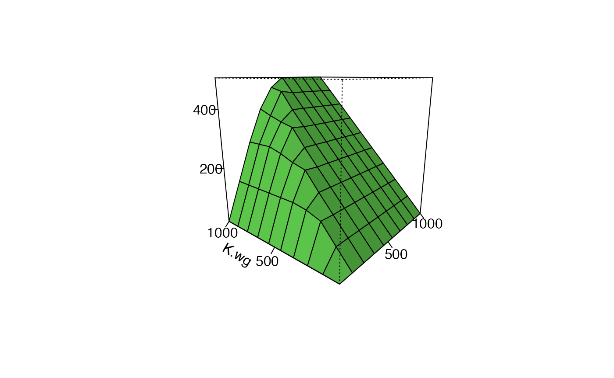

f-make_figure_28_3.RmdFigure 28.3 is a 3D surface showing how the overall equilibrium population size (TODO: how defined - all summer individuals?) of the population changes as the amount of high-qualty “source” breeding habitat and high-equality winter habitat varies. Limitation is indicated by … TODO
Load the redstart package
TODO add download instructions for development version
library(redstart)
As inputs the runFAC_multi() function takes a dataframe with two or more parameters varied. In Figure 28.3 summer (TODO K.x?) and winter (TODOL: K.x?) carrying capacities are each varied systematically from 0 to 1000 (TODO: number of source habitats?). This range is set up using two functions, param_ranges() and param_seqs(). param_ranges() sets the end points of the range, and param_seqs() generates the intervening values between the endpoints to actually input into the model.
The defaults for runFAC_multi() are set to run param_ranges() and param_seqs() behind the scenes to reproduce Figure 28.3 in Runge and Marra (2004). The data underlying the figure can therefore be generated just by calling runFAC_multi(). Below, I’ll first show how to quickly create the figure using the defaults. I’ll then gradually show how the functions work.
TODO: indicate that breeding carrying capacity is in pairs and winter is in idividuals
We can generate figure 28.4 by running runFAC_multi() without any arguments. This may take a minute or two.
F28_3 <- runFAC_multi() #> The dimension of the fully expanded dataframe is: #> 100 by 30 #> #> Model at equilibrium after 50 iterations #> #> Model at equilibrium after 126 iterations #> #> Model at equilibrium after 126 iterations #> #> Model at equilibrium after 126 iterations #> #> Model at equilibrium after 126 iterations #> #> Model at equilibrium after 126 iterations #> #> Model at equilibrium after 126 iterations #> #> Model at equilibrium after 126 iterations #> #> Model at equilibrium after 126 iterations #> #> Model at equilibrium after 126 iterations #> #> Model at equilibrium after 50 iterations #> #> Model at equilibrium after 89 iterations #> #> Model at equilibrium after 137 iterations #> #> Model at equilibrium after 137 iterations #> #> Model at equilibrium after 137 iterations #> #> Model at equilibrium after 137 iterations #> #> Model at equilibrium after 137 iterations #> #> Model at equilibrium after 137 iterations #> #> Model at equilibrium after 137 iterations #> #> Model at equilibrium after 137 iterations #> #> Model at equilibrium after 50 iterations #> #> Model at equilibrium after 72 iterations #> #> Model at equilibrium after 143 iterations #> #> Model at equilibrium after 143 iterations #> #> Model at equilibrium after 143 iterations #> #> Model at equilibrium after 143 iterations #> #> Model at equilibrium after 143 iterations #> #> Model at equilibrium after 143 iterations #> #> Model at equilibrium after 143 iterations #> #> Model at equilibrium after 143 iterations #> #> Model at equilibrium after 50 iterations #> #> Model at equilibrium after 84 iterations #> #> Model at equilibrium after 99 iterations #> #> Model at equilibrium after 148 iterations #> #> Model at equilibrium after 148 iterations #> #> Model at equilibrium after 148 iterations #> #> Model at equilibrium after 148 iterations #> #> Model at equilibrium after 148 iterations #> #> Model at equilibrium after 148 iterations #> #> Model at equilibrium after 148 iterations #> #> Model at equilibrium after 50 iterations #> #> Model at equilibrium after 84 iterations #> #> Model at equilibrium after 83 iterations #> #> Model at equilibrium after 151 iterations #> #> Model at equilibrium after 151 iterations #> #> Model at equilibrium after 151 iterations #> #> Model at equilibrium after 151 iterations #> #> Model at equilibrium after 151 iterations #> #> Model at equilibrium after 151 iterations #> #> Model at equilibrium after 151 iterations #> #> Model at equilibrium after 50 iterations #> #> Model at equilibrium after 84 iterations #> #> Model at equilibrium after 83 iterations #> #> Model at equilibrium after 106 iterations #> #> Model at equilibrium after 154 iterations #> #> Model at equilibrium after 154 iterations #> #> Model at equilibrium after 154 iterations #> #> Model at equilibrium after 154 iterations #> #> Model at equilibrium after 154 iterations #> #> Model at equilibrium after 154 iterations #> #> Model at equilibrium after 50 iterations #> #> Model at equilibrium after 84 iterations #> #> Model at equilibrium after 95 iterations #> #> Model at equilibrium after 90 iterations #> #> Model at equilibrium after 156 iterations #> #> Model at equilibrium after 156 iterations #> #> Model at equilibrium after 156 iterations #> #> Model at equilibrium after 156 iterations #> #> Model at equilibrium after 156 iterations #> #> Model at equilibrium after 156 iterations #> #> Model at equilibrium after 50 iterations #> #> Model at equilibrium after 84 iterations #> #> Model at equilibrium after 95 iterations #> #> Model at equilibrium after 89 iterations #> #> Model at equilibrium after 110 iterations #> #> Model at equilibrium after 158 iterations #> #> Model at equilibrium after 158 iterations #> #> Model at equilibrium after 158 iterations #> #> Model at equilibrium after 158 iterations #> #> Model at equilibrium after 158 iterations #> #> Model at equilibrium after 50 iterations #> #> Model at equilibrium after 84 iterations #> #> Model at equilibrium after 95 iterations #> #> Model at equilibrium after 90 iterations #> #> Model at equilibrium after 96 iterations #> #> Model at equilibrium after 160 iterations #> #> Model at equilibrium after 160 iterations #> #> Model at equilibrium after 160 iterations #> #> Model at equilibrium after 160 iterations #> #> Model at equilibrium after 160 iterations
This produces a list; one of the elements of this list is as dataframe called “multiFAC.out.df.RM” (“multi-FAC output dataframe - Runge and Marra version”), which contains all the equilibirum population sizes which make up the figure.
This dataframe can be plotted with the function plot_Fig28_3().
First, let’s extract out the dataframe with our information
F28_3_data <- F28_3$multiFAC.out.df.RM
Now build the plot. TODO: oritation of plot - I have K.wg on the left instead of the right
par(mfrow = c(1,1)) plot_Fig28_3(F28_3_data)

Below are some insights into what’s going on behind the scenes above. This will set us up for a detailed explanation in the next sections.
The param_ranges() functions has a “figure = …” arguement that allows you to specify a particular figure to generate. This allows you to set the parameters used for a particular figure in the paper. The default is for figure 28.3 So whne you call just runFAC_multi() interally what’s happneing is this:
F28.3.range <- param_ranges(figure = 28.3)
Note that K.bc and K.wg both vary from 1 to 1000.
head(F28.3.range) #> min max #> gamma 5e+00 5e+00 #> co. 1e+00 1e+00 #> K.bc 1e+00 1e+03 #> K.bk 1e+04 1e+04 #> K.wg 1e+00 1e+03 #> S.w.mg 8e-01 8e-01
Once the endpoints of the ranges are set param_seqs() generates the intervening values. So, what’s happening internally is this:
F28.3.seq <- param_seqs(F28.3.range)
We can see some of the fixed and also the varying parameters here
head(F28.3.seq) #> $gamma #> [1] 5 #> #> $co. #> [1] 1 #> #> $K.bc #> [1] 1 112 223 334 445 556 667 778 889 1000 #> #> $K.bk #> [1] 10000 #> #> $K.wg #> [1] 1 112 223 334 445 556 667 778 889 1000 #> #> $S.w.mg #> [1] 0.8
These vectors are then transformed internally into a “grid” of all possible combinations using param_grid()
F28.3.grid <- param_grid(param.seqs = F28.3.seq) #> The dimension of the fully expanded dataframe is: #> 100 by 30
This produces a big matrix!
dim(F28.3.grid) #> [1] 100 30
We can get a peak at the variation here.
head(F28.3.grid[,c(1:5)],12) #> gamma co. K.bc K.bk K.wg #> 1 5 1 1 10000 1 #> 2 5 1 112 10000 1 #> 3 5 1 223 10000 1 #> 4 5 1 334 10000 1 #> 5 5 1 445 10000 1 #> 6 5 1 556 10000 1 #> 7 5 1 667 10000 1 #> 8 5 1 778 10000 1 #> 9 5 1 889 10000 1 #> 10 5 1 1000 10000 1 #> 11 5 1 1 10000 112 #> 12 5 1 112 10000 112
Once the grid is generated we can plug it into runFAC_multi() the param.grid = … arguement of runFAC_multi(). This happened automatically above, but we could do this explicitly like this:
F28_3 <-runFAC_multi(param.grid = F28.3.grid)
The output is then plotted as above using plot_Fig28_3().
To make Figure 28.3 de novo we need specify more information in param_ranges(). This function takes as its arguements all the parameters in the model, though defaults are set so we only have to change what we are spefically interested in.
You can see the defaults by calling up the help file. Its unforuntaely a bit dense since the input is a range of the minimum and maxium.
?param_rangesFor generating Figure 28.3 want to work with K.bc (carrying capacity of breeding “source” habitat) and K.wg (carrying capacity of good winter habitat). We want to vary each from 1 to 1000 (note that K.bc is in terms of pairs while K.wg is individuals).
F28.3.range <- param_ranges(K.bc. = c(1, 1000), K.wg. = c(1, 1000))
We can then proceed as with param_seqs() and param_grid() to generate the necessary dataframe.
F28.3.seq <- param_seqs(F28.3.range) F28.3.grid <- param_grid(param.seqs = F28.3.seq) #> The dimension of the fully expanded dataframe is: #> 100 by 30
We then run the model and plot it like this (not run)
#run the model F28_3 <-runFAC_multi(param.grid = F28.3.grid) #plot plot_Fig28_3(F28_3$multiFAC.out.df.RM)